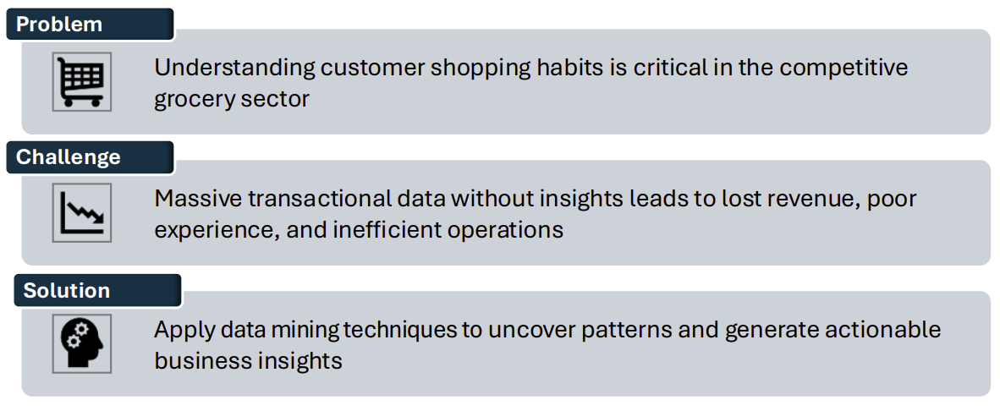
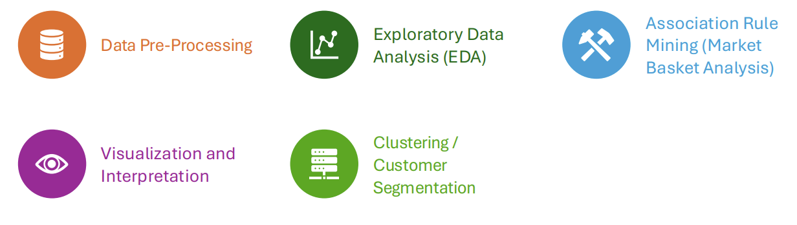
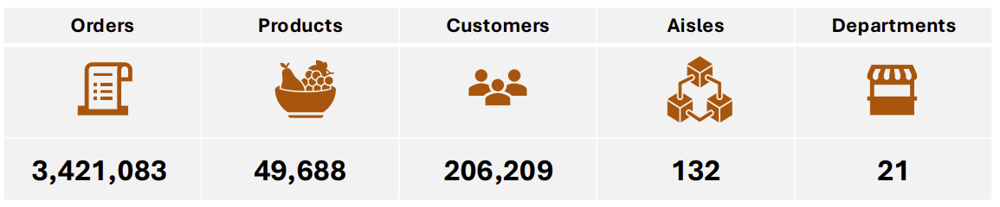
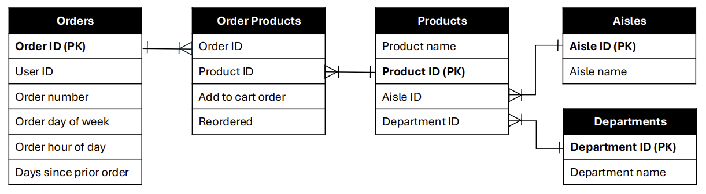

Overview
The rapid growth of e-commerce and digital grocery platforms has generated an unprecedented volume of transactional data, creating new opportunities to understand customer purchasing behavior at scale. Such insights are essential for optimizing operations, enhancing recommendation systems, and improving the overall shopping experience in an increasingly competitive retail environment. In this study, the Instacart’s online grocery dataset is analyzed using a combination of data mining techniques, including exploratory analysis, association rule mining, and clustering. These complementary approaches allow capturing behavioral patterns, uncovering relationships among co-purchased items, and identifying distinct customer segments. Preprocessing steps were applied to ensure data quality and support the analytical workflow. The findings highlight how different analytical perspectives contribute to a deeper understanding of customer behavior, offering practical implications for recommendation systems, store layout optimization, and cross-selling strategies.
Instacart - A Leader in Online Grocery Shopping
Background
Instacart is an online grocery delivery platform that connects customers with personal shoppers who fulfill orders from local supermarkets
Retail Partners
- Costco
- Walmart
- Whole Foods
- Target
Key Research Questions
- What are some patterns in customer purchasing behaviors?
- Which products are frequently purchased together?
- What items are customers most likely to reorder?
- How well can we predict future purchase behavior?
Methodology & Techniques
Data Overview
Entity Relationship Diagram (ERD)
Key Findings
- Temporal patterns: Orders peak on Sundays and Mondays between 9:00 a.m. and 5:00 p.m., indicating weekly stock-up behavior. A clear 30-day cycle also appears in order volume.
- Frequent itemsets: Strong co-purchasing patterns such as [Bag of Organic Bananas, Organic Hass Avocado], and Produce + Dairy Eggs as core basket drivers.
- Reorder behavior: Dairy and Fresh Produce are the most frequently reordered categories. Loyal customers (16+ orders) are 2.4× more likely to reorder than new customers.
- Customer segments: Distinct groups such as Infrequent Buyers and Family-Oriented shoppers reveal different future value and engagement profiles.
About the Authors
Darien Diaz and Nancy Lopez are data science and analytics professionals with experience in customer analytics, telecommunications, and applied machine learning. This project was completed as part of graduate studies in Data Science and AI.